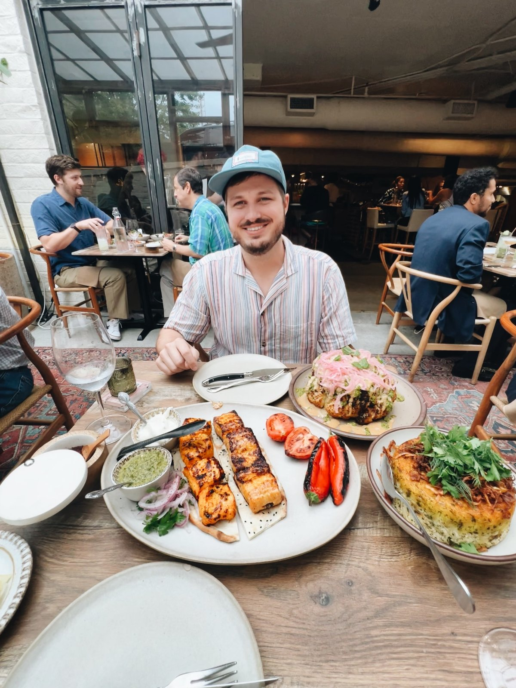
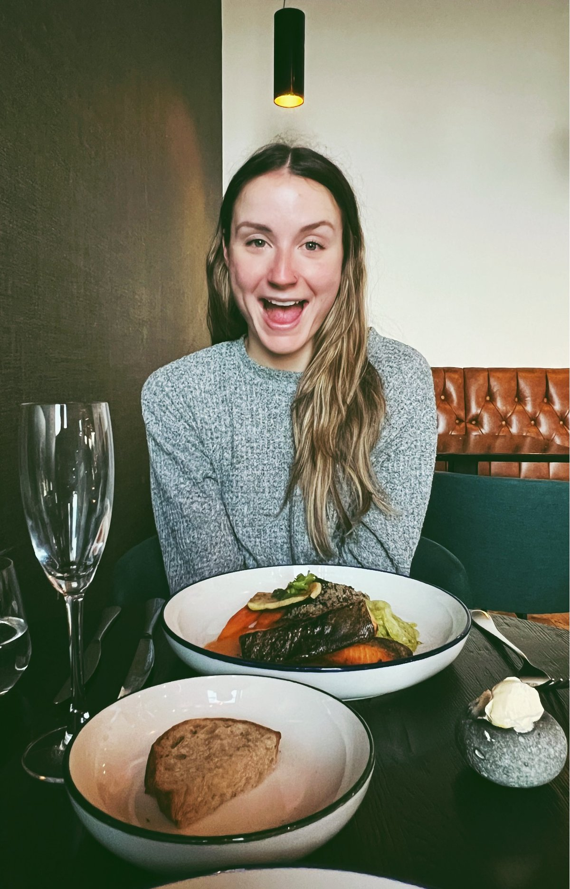
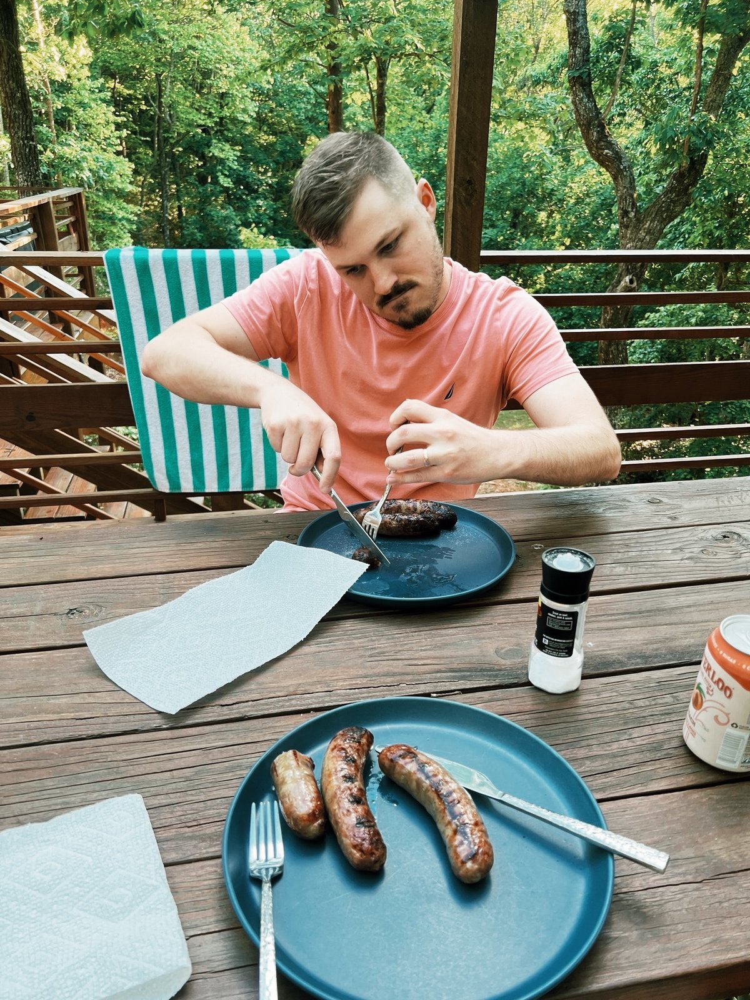
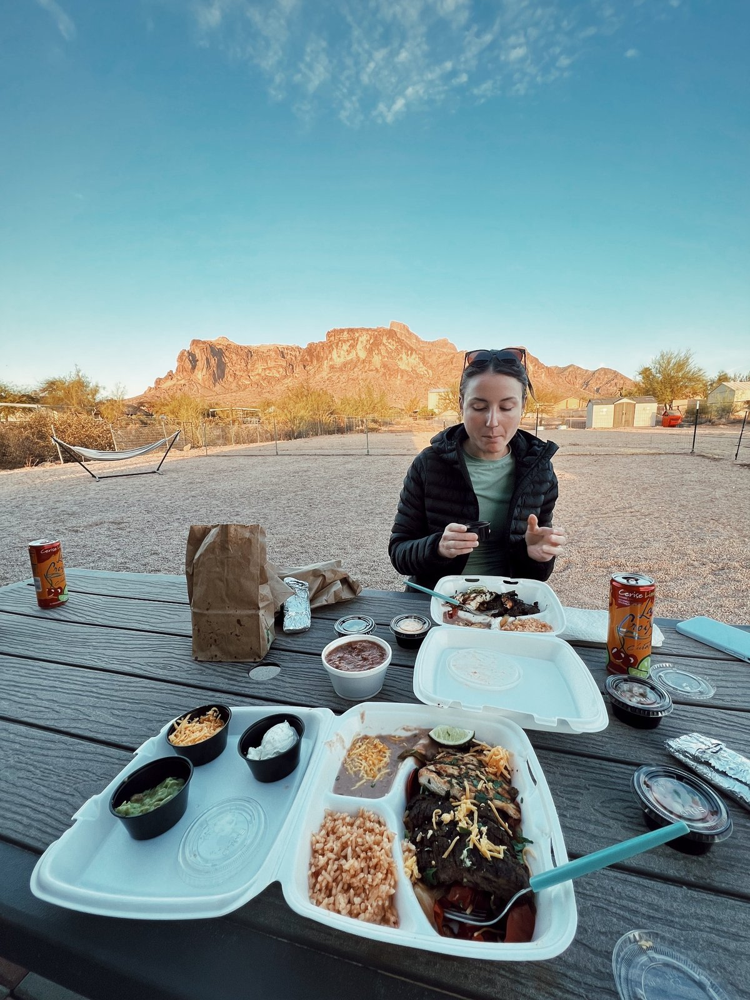
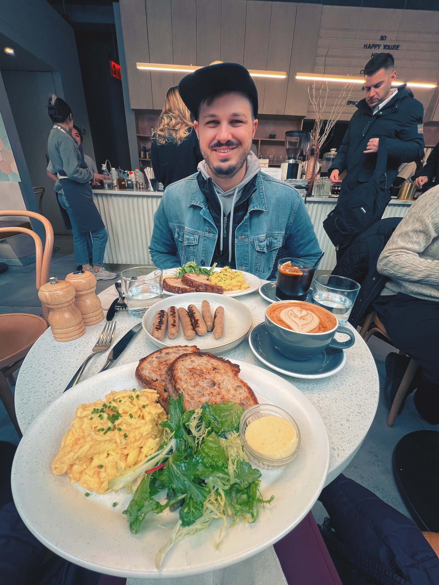

Six core screens. Everything is one kind of "recipe" — some have full ingredients and steps, some are just a note, some point at a cookbook page. Bottom tabs: Recipes, Plan, Add, List.





Half the salt — way better. Laura: less char next time.
Salmon: cast iron, skin down 4 min, flip 2. Salt, pepper, garlic powder.
Broccoli: roast at 425° for 18 min with olive oil + garlic. Lemon at the end.
Add a few to pull this into the shopping list — or don't. It's salmon and broccoli.